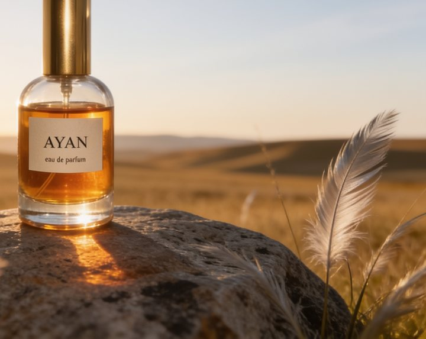
E1Fixed in v2
"Feather grass" drawn as bird feathers
Fix: botanical name plus a visual description: "Stipa steppe grass with long silky silver seed awns".
Generative AI engineer. I design presets and pipelines that turn one upload into a finished shot, and I measure where they break.
The user uploads one photo of a product, shot on a phone in a messy room. The preset returns a five-second golden-hour shot of that exact product on a granite boulder in the Kazakh steppe: slow push-in, Stipa grass in the wind, warm backlight.
Shape, colors and label text must survive. Everything else is the preset's job. The reel shows the five test products with each user's photo in the corner.
Three models chained in a ComfyUI graph. I picked them from OpenRouter's usage ranking (tokens spent by all users in the week to Sept 24, 2026), then kept or replaced each one based on the test set.
Describes the product exactly, quotes only text it can read with certainty, adds a material note for glass, metal or matte surfaces and picks a natural resting position. Then fills the master template.
Rebuilds the product on the boulder, with the user's photo as the identity reference. No new text, props or garnish.
Slow push-in, grass in the wind, sun flare. The product is a rigid object and does not change.
Product identity is locked in a cheap frame before any motion. I checked every $0.10 start frame before paying 7× more for the video, so failed frames never became failed videos.
Five photos that look like real uploads: flash, clutter, a tilted phone. Each one targets a failure mode that product presets hit in practice.
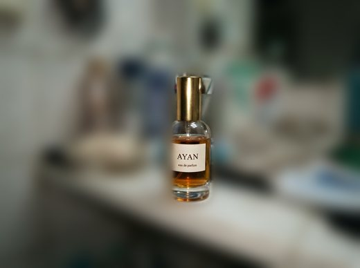
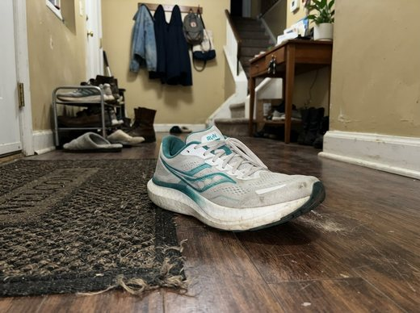
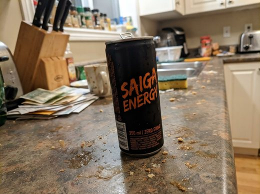
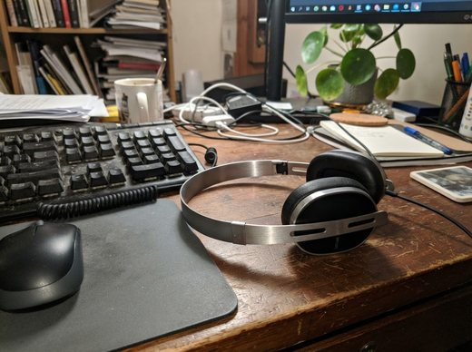
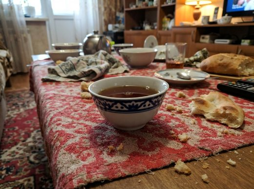
Test photos are generated to look like user uploads. Brands are fictional; real logos that appeared in one background are blurred.
Every run was reviewed frame by frame. Each failure got a code, a cause and a fix in the prompts or parameters. Eight failure classes found, seven closed.

Fix: botanical name plus a visual description: "Stipa steppe grass with long silky silver seed awns".
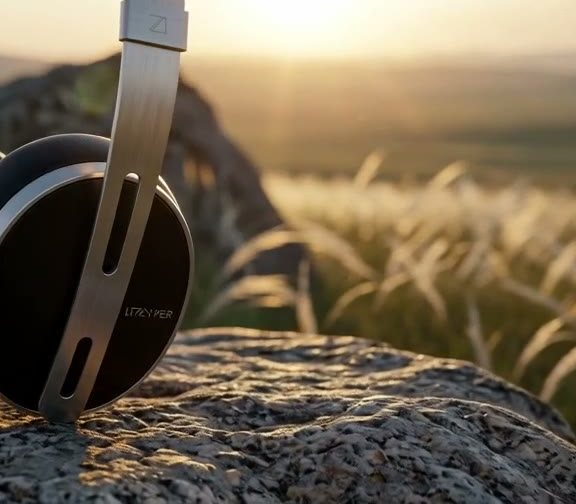
The enhancer misread a tiny logo as "soul"; the image model then drew garbled letters. Fix: quote only text read with certainty, otherwise write "a small unreadable logo"; no new text in the frame.
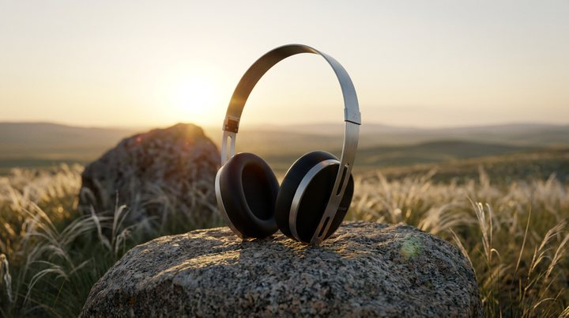
Headphones balanced upright on their cups. Fix: a resting-position rule per object type: shoes on the sole, headphones on their side, bottles and bowls upright.
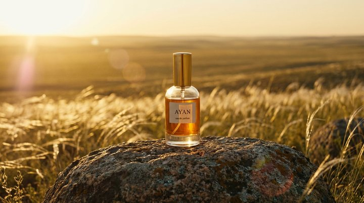
About 25% of frame height where the brief asked for half. Fix: shot size ("medium close-up, product large") instead of a percentage. Now 30–35%; the push-in ends near 70%.
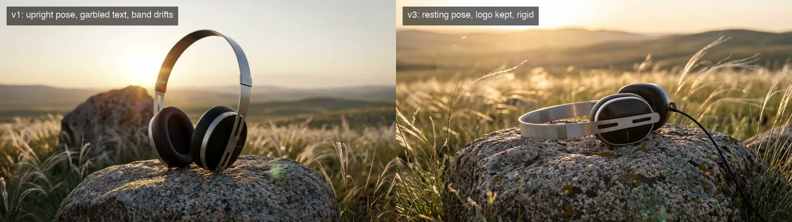
The headband changed width and the sliders moved. Fix: "a rigid object that stays unchanged, including thin parts and edges" in the video prompt.
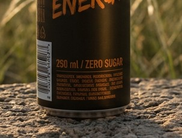
1K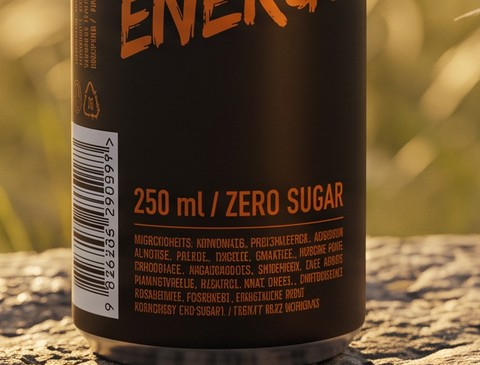
2KAt 1K "250 ml" reads like "2S0 ml". Fix: start frame at 2K for $0.03 more. The print stays legible in the 720p video.
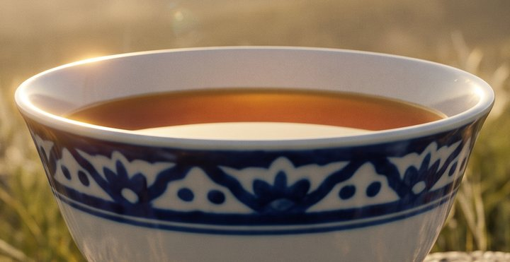
v3The image model floated a herb sprig in the tea. Fix: no garnish, leaves, props or decorations on the product or its contents.
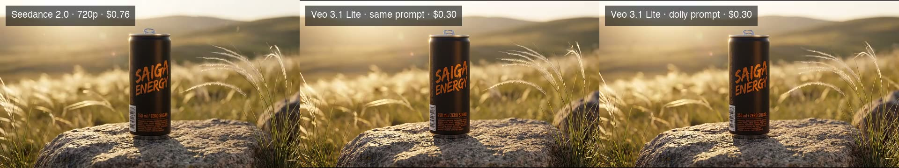
With the shared prompt the camera stayed almost still, and "dust particles" became flying flakes. Fix: a Veo-specific motion prompt, described below.
The four most used image models on OpenRouter, given the same enhanced prompt and the same reference photo. Popularity alone did not decide it.
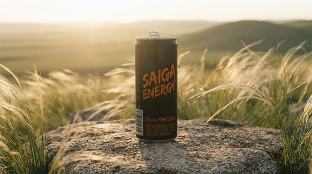
Cheap, but rejects 2K and redrew the kese ornament as an all-over pattern.
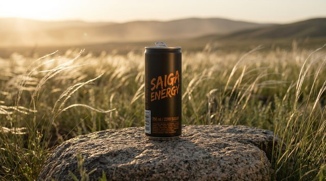
Keeps the product and follows the lighting brief. Sharp small print at 2K.
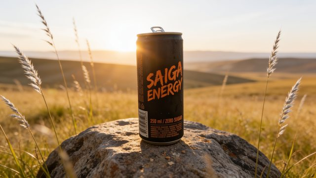
Sharp text, but drew bird feathers for "feather grass" (E1) and takes 35 s a frame.
Sharpest print and cheapest. Drifted to an orange sunset and added condensation drops.
OpenRouter publishes no ranking for video models, so I ran the same start frames through three candidates.
| Model | Output | Cost per clip | Render | Result |
|---|---|---|---|---|
| Seedance 2.0 | 720p · 5 s | $0.76 | 150–180 s | Strongest push-in, product from ~30% to ~70% of the frame. Used for the reel. |
| Seedance 2.5 | 720p max | $1.16 | 249 s | No visible gain over 2.0 on the headphones for 1.5× the price. One test. |
| Veo 3.1 Lite | 1080p · 6 s | $0.30 | 100–115 s | Shared prompt: nearly static camera. Own dolly prompt: push-in works, shallower (~35% to ~50%), sharper labels. |
Each video model has its own motion vocabulary, so the preset keeps one motion prompt per model. The next version ships two tiers: Veo 3.1 Lite at 1080p by default for about $0.40 a result, and Seedance 2.0 when the camera move matters most.
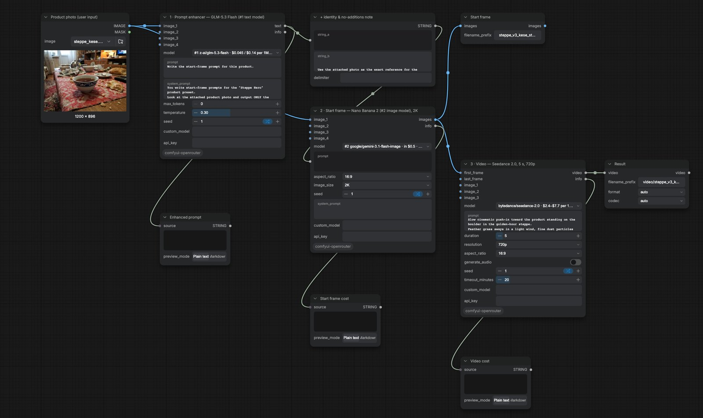
The preset as a ComfyUI graph on my own OpenRouter nodes. The model dropdowns list models by real usage and show each model's OpenRouter price plus the actual cost of its last run here, so choosing a model is a cost decision made in the graph itself.
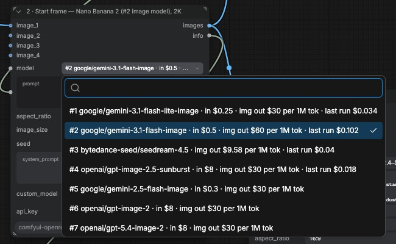
ComfyUI's built-in OpenRouter node goes through Comfy's billing proxy and offers two image models and no video. I wrote three nodes that use your own key: Image (55 models), Video (25) and LLM (441).
Source, MIT: github.com/eldarazbanbayev/comfyui-openrouter
At Digital Arts I build Falcon OS, a multi-agent platform. Every generative capability is a container with a typed manifest (prompt, negative prompt, reference media, model, seed) and an asynchronous submit, poll and download cycle.
Generative agents I built there: Higgsfield image and video, Nano Banana image editing, Envato Gen AI for images, video, voice, music and sound effects, ElevenLabs voice and speech-to-text. A manifest is the same idea as a preset: simple typed inputs outside, a fixed recipe inside.